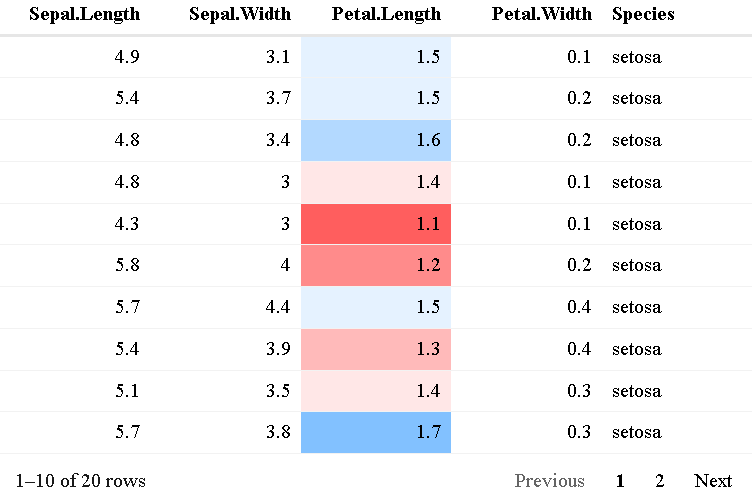
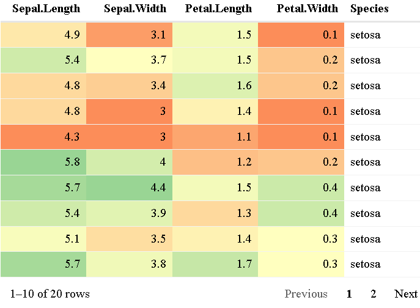
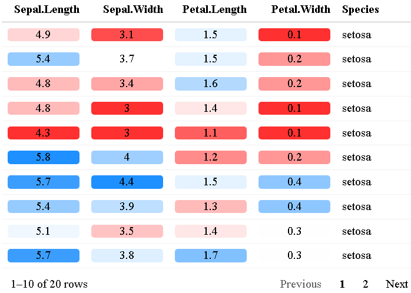
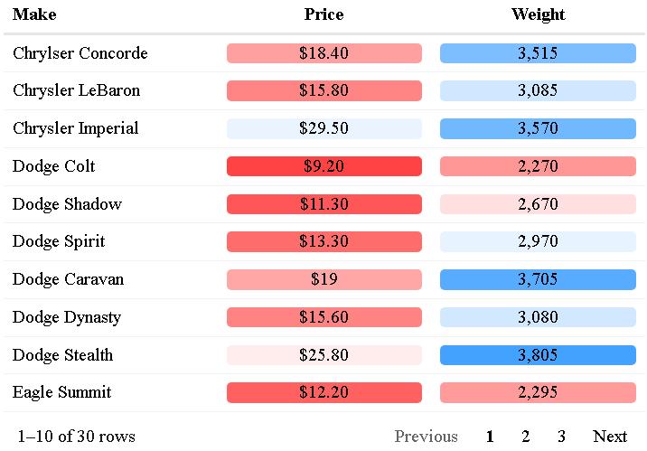
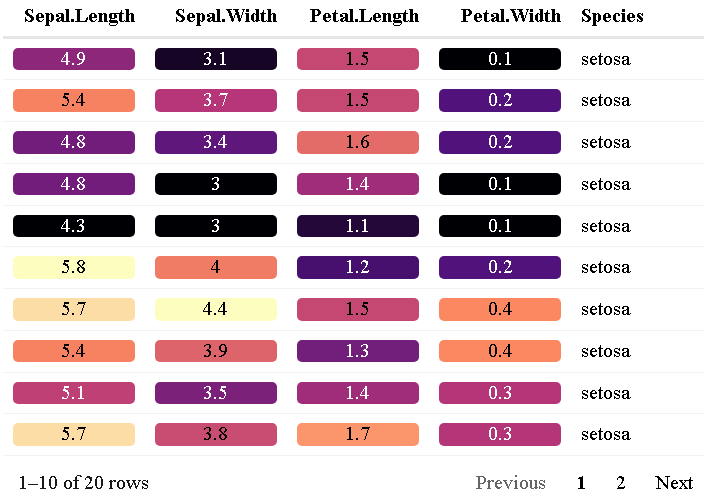
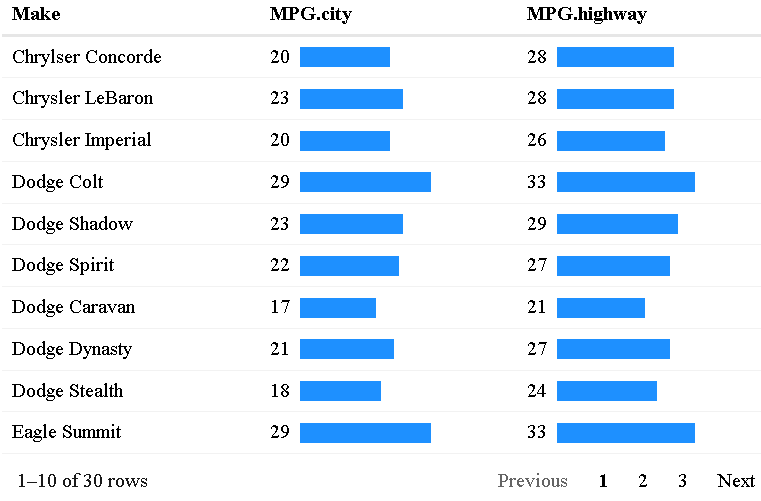
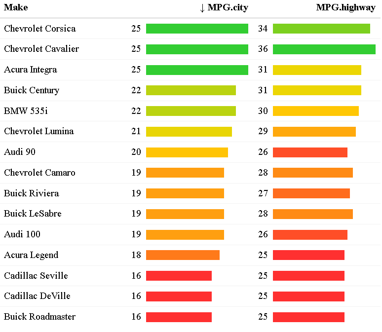
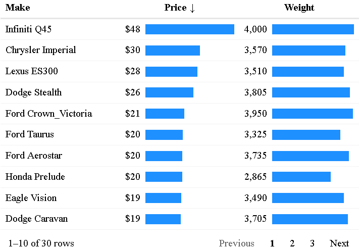
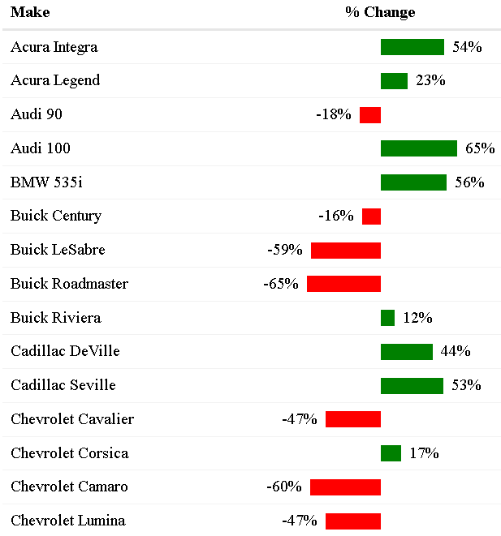
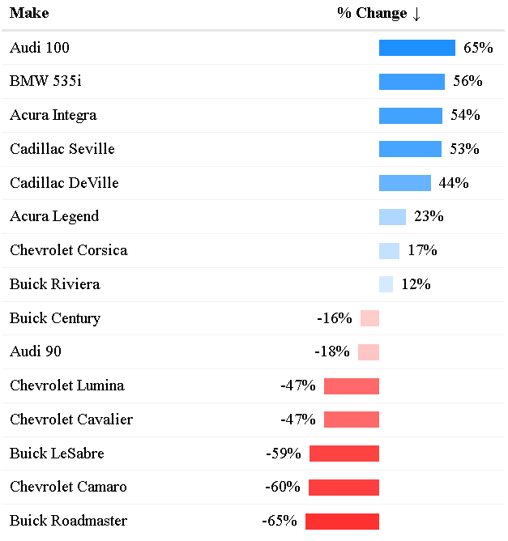

Simplify the styling, formatting, and customization of tables made with reactable.
Installation
The reactablefmtr package is available from CRAN:
install.packages("reactablefmtr")Or you can install the development version from GitHub with:
remotes::install_github("kcuilla/reactablefmtr")Background
reactablefmtr is an extension of the reactable package created by Greg Lin. Before you use reactablefmtr, you need to first have an understanding of how to use reactable. Greg Lin put together a great overview here that I recommend checking out. It has many examples and tutorials that are necessary to learn reactable.
A challenge of creating tables with reactable is that some of the code required to style and format the tables is a bit lengthy and can be difficult to understand for someone who is a novice R user. The reactablefmtr aims to firstly simplify the customization and formatting process that can be used by any R user regardless of their experience, and secondly, reduce the amount of time and effort required to build a table with {reactable}.
Showcase
Animated Data Bars
Data bars are now animated!

You may also notice that gradient colors can be applied to data bars as well, which is covered in the data_bars_gradient() section below.

color_scales()
By default, color_scales() assigns a three-color red-white-blue pattern based on the value of the cells in a column from low to high:
data <- iris[10:29, ]
reactable(data,
columns = list(Petal.Length = colDef(style = color_scales(data))))
You can change the color scheme to any number of colors you’d like by specifying the colors in a vector and color_scales() will assign the colors from low to high in the order you provide:
reactable(data,
columns = list(
Petal.Length = colDef(style = color_scales(data, c("purple", "pink", "white", "green")))))
You can also apply color_scales() across all columns and use custom color palettes such as the “Spectral” color set from {RColorBrewer}:
reactable(data,
defaultColDef = colDef(style = color_scales(data, brewer.pal(3, "Pastel1"))))
Previously in {reactable}, using dark color palettes such as the “magma” color set from {viridis} was troublesome since you couldn’t see the values in the cells with dark backgrounds. Now, with {reactablefmtr}, the colors of the values automatically are changed to white if the colors are dark:
library(viridis)
reactable(data,
defaultColDef = colDef(style = color_scales(data,
colors = viridis::magma(5))))
color_tiles()
Another option of conditionally coloring cells based on their values is with color_tiles():
reactable(data,
defaultColDef = colDef(cell = color_tiles(data)))
Note that color_tiles() needs to be placed within the cell argument, whereas color_scales() is placed within style. A benefit of using color_tiles() over color_scales() is that you have the option to format the values using formatters from the scales package similar to how you would in ggplot2:
car_prices <- MASS::Cars93[20:49, c("Make", "Price", "Weight")]
reactable(car_prices,
columns = list(
Price = colDef(align = "center",
cell = color_tiles(car_prices,
number_fmt = scales::dollar)),
Weight = colDef(align = "center",
cell = color_tiles(car_prices,
number_fmt = scales::comma))))
Just like with color_scales(), you are now free to use dark color palettes. Note: this option can be turned off by setting bright_values = FALSE:
library(viridis)
reactable(data,
defaultColDef = colDef(style = color_tiles(data,
colors = viridis::magma(5))))
data_bars()
By default, data_bars() assigns a horizontal bar to each row relative to it’s value compared to other values in a particular column:
data <- MASS::Cars93[20:49, c("Make", "MPG.city", "MPG.highway")]
reactable(data,
columns = list(
MPG.city = colDef(align = "left", # align column header
cell = data_bars(data))))
You can change both the color of the data bars and the background:
reactable(data,
columns = list(
MPG.city = colDef(align = "left", # align column header
cell = data_bars(data, "forestgreen", "lightgrey"))))
Just like with color_scales(), you can apply a gradient of colors to your data bars if you assign more than one color in a vector:
data <- MASS::Cars93[1:15, c("Make", "MPG.city", "MPG.highway")]
reactable(data,
pagination = FALSE, # display all rows on one page
defaultSortOrder = "desc", # sort by descending order
defaultSorted = "MPG.city", # sort by MPG.city
defaultColDef = colDef(cell = data_bars(data, c("firebrick1", "gold", "limegreen"))))
You can also now format numbers with the scales package the same way that you would format numbers in the color_tiles() example above. The number_fmt option is available for data_bars_gradient() and data_bars_pos_neg() as well.
car_prices <- MASS::Cars93[20:49, c("Make", "Price", "Weight")]
reactable(car_prices,
columns = list(
Price = colDef(align = "center",
cell = data_bars(car_prices,
number_fmt = scales::dollar_format(accuracy = 1))),
Weight = colDef(align = "center",
cell = data_bars(car_prices,
number_fmt = scales::comma))))
data_bars_gradient()
If you would like to customize your data_bars() a step further and apply a linear color gradient, you can now use data_bars_gradient():
data <- sample_n(penguins,50) %>% # sample 50 rows
filter(!is.na(bill_length_mm)) %>% # remove NA's
select(species, island, body_mass_g)
reactable(data,
columns = list(
body_mass_g = colDef(cell = data_bars_gradient(data))))
You can add as many colors as you would like to make the gradient:
reactable(data,
columns = list(
body_mass_g = colDef(cell = data_bars_gradient(data, colors = c("red", "orange", "yellow", "green", "blue", "indigo", "violet"))))
data_bars_pos_neg()
If your column contains negative values but you would like to show data bars for the values, you can use data_bars_pos_neg():
data <- data %>%
mutate(Change = round(runif(15, min = -7, max = 5))) %>%
select(Make, Change)
reactable(data,
pagination = FALSE,
columns = list(
Change = colDef(align = "center", # align column header
cell = data_bars_pos_neg(data))))
If your column is displaying percentages rather than whole numbers, you can add the percent symbol by using the percent formatter from the scales package within number_fmt:
data <- data %>%
mutate('% Change' = round(runif(15, min = -0.7, max = 0.7), digits = 2)) %>%
select(Make, '% Change')
reactable(data,
pagination = FALSE,
columns = list(
`% Change` = colDef(align = "center", # align column header
cell = data_bars_pos_neg(data,
number_fmt = scales::percent))))
You may also apply a color gradient to the data bars by assigning three or more colors:
reactable(data,
pagination = FALSE,
columns = list(
`% Change` = colDef(align = "center",
cell = data_bars_pos_neg(data,
colors = c("#ff3030", "#ffffff", "#1e90ff"),
number_fmt = scales::percent))))
